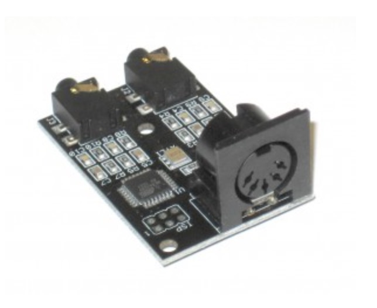

4 voice drum machine that is powered from the MIDI data line.

It has 2 wavetable voices for making kick drums, toms, wood blocks, bells, and a host of other sounds. There is a voice set aside for hi-hats and cymbals, and another which is a filtered noise source, which can make snares and hollow-tube sounds. Each voice has separate attack, decay, and release, along with frequency sweep, and a bunch of other effects for warping the sounds to fit all your percussive needs. And, there are independent outputs for each voice.
All DB data
- Name: MIDIvampire II
- Author: Open Music Labs
- Link: http://www.openmusiclabs.com/projects/midivamp2/index.html
- Demo: https://www.youtube.com/watch?v=oQt7cyDuBHY
- Picture: ../pics/midivampire-ii.jpg
- Description: 4 voice drum machine that is powered from the MIDI data line.
- Notes: It has 2 wavetable voices for making kick drums, toms, wood blocks, bells, and a host of other sounds. There is a voice set aside for hi-hats and cymbals, and another which is a filtered noise source, which can make snares and hollow-tube sounds. Each voice has separate attack, decay, and release, along with frequency sweep, and a bunch of other effects for warping the sounds to fit all your percussive needs. And, there are independent outputs for each voice.
- Artifacts: {“Schematic”=>true}{“PCB”=>true}{“BOM”=>true}{“FW”=>true}{“Docs”=>true}{“Enclosure”=>false}
- Tags: DrumAVRKitMIDI
- Level: Intermediate
{kind=link}